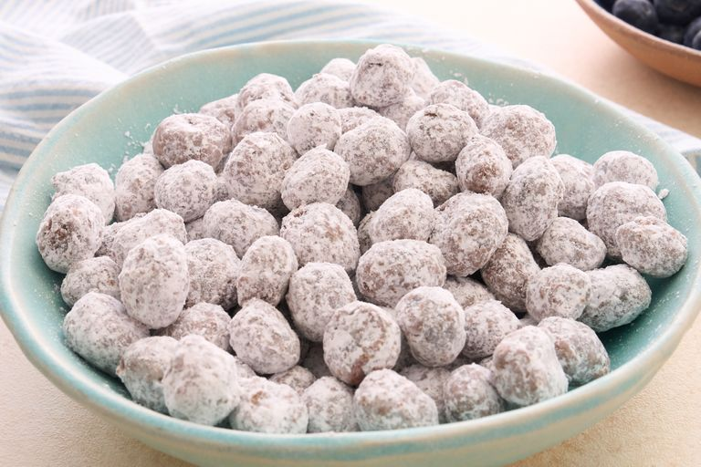

bleuberry puppy chow

This blueberry puppy chow gives the classic snack a fruity twist by coating fresh blueberries in a chocolate-and-peanut-butter mixture and dusting them with confectioners’ sugar. Ready in about 30 minutes, it’s a fun no-bake snack for summer.
Ingrediens:
- 1/2 cup semisweet chocolate chips.
- 2 tablespoons creamy peanut butter
- 1 teaspoon coconut oil
- 2 cups fresh blueberries
- 1 cup confectioners sugar
Steps:
- In a large bowl, melt the chocolate chips, peanut butter, and coconut oil in the microwave for about 2 minutes in 30-second intervals, stirring each time until smooth.
- Add blueberries to the bowl, gently tossing them until completely coated
- In batches, sprinkle the confectioners' sugar over the berries and gently toss until completely coated.
- Pour them out onto a lined baking sheet and let cool completely, about 15 minutes.
- Store in an airtight container in the refrigerator for up to a week.